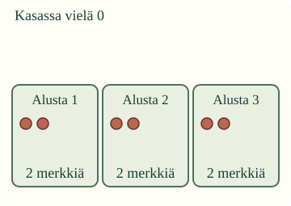
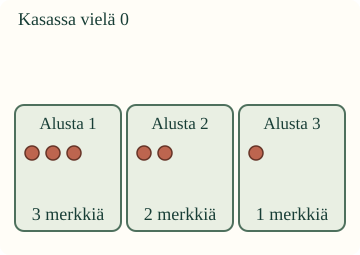

Montako kukin saa?
Aavalla on 6 pelimerkkiä. Kolme pelaajaa saa kukin oman alustan. Merkit jaetaan niin, että jokainen saa yhtä monta.
Tavoitteesi: jaa koko määrä tasan annettujen alustojen kesken ja selvitä yhden alustan osuus.
Kokeile oikeilla merkeillä
Laita pöydälle 6 laskumerkkiä ja kolme alustaa. Anna yksi merkki jokaiselle alustalle. Tee sama uudelleen, kunnes kasa on tyhjä. Katso nyt yhden alustan määrää.
Vuorottelu on yksi toimiva tapa. Voit myös jakaa toisessa järjestyksessä, kun koko kasa tulee jaetuksi ja jokaisella on lopuksi yhtä monta.
Esimerkki: kolme alustaa on jo annettu

Alustoja on 3. Koko kasassa oli 6 merkkiä. Jokainen sai 2. Kysyimme yhden alustan osuutta, joten vastaus on 2 merkkiä kullekin.
Tämän voi merkitä 6 : 3 = 2. Tässä 6 on koko määrä, 3 on alustojen määrä ja 2 kertoo yhden alustan osuuden. Kaksoispiste tarkoittaa tässä jakamista.
Ansakohta: kaikki jaettu, mutta ei tasan

Nyt joku sai 3, toinen 2 ja kolmas 1. Koko kasa on jaettu, mutta jako ei ole tasan. Palauta yksi merkki ensimmäiseltä alustalta ja anna se kolmannelle. Nyt jokaisella on 2.
Jos jokaiselle on annettu vasta yksi merkki, määrät ovat yhtä suuret, mutta kasassa on vielä jaettavaa. Tarkista siis sekä koko määrä että yhtä suuret osuudet.
Ennusta
Jos samat 6 merkkiä jaettaisiin vain kahdelle alustalle, saisiko kukin enemmän vai vähemmän kuin kolmelle jaettaessa? Kokeile tarvittaessa merkeillä.
Avaa selitys
Kahdelle jaettaessa kumpikin saa 3. Kolmelle jaettaessa kukin saa 2. Koko kasa pysyy samana, mutta alustojen määrä muuttuu.
Jaa mallin merkit
Uusi tilanne: rakennusmerkit
Rakennusleikissä on 8 merkkiä ja 4 työalustaa. Kun jokaiseen annetaan yksi ja sitten toinen, kasa on tyhjä. Kukin saa 2 merkkiä. Alustojen määrä on annettu; yhden alustan osuus selvitetään jakamalla.
Apua tasajakoon
Katso vain yhtä kierrosta kerrallaan. Onko jokainen saanut yhden? Jatka niin kauan kuin kasassa on merkkejä. Lopuksi vertaa kaikkien alustojen määriä. Voit palauttaa ja siirtää merkkejä ilman alusta aloittamista. Esineiden nimiä ei tarvitse arvata tai sanoa ääneen.
Tutki lisää: jako takaisin kokonaiseksi
Kolmella alustalla on kullakin 2 merkkiä. Kokoa ne takaisin yhdeksi kasaksi ja laske. Saat 6. Näin voit tarkistaa, että kaikki alussa annetut merkit ovat mukana. Kertolaskua ei tarvitse osata tämän kokeilun tekemiseen.
Opettajalle: ositusjaon merkitys ja rajat
Vuosiluokat 1–2; käsite, kanoninen atomic-rooli säilyy. Ositusjaossa kokonaismäärä ja ryhmien määrä tunnetaan, ryhmän koko etsitään. Ainoa pakollinen esitietoryhmä on M-NUM-02. M-NUM-17 ja M-MUL-01 ovat vahvaa tukea, eivät avausportteja. Puolittamista tai kertotaulua ei edellytetä.
Ruututehtävässä oppilas tekee myös jaon: käytä koko kasa, tee osuuksista yhtä suuret ja ilmoita yhden osuus. Eri jakamisjärjestykset hyväksytään. Apukierros on automaattisesti tuettua toimintaa; oikeasta lopputilasta ei päätellä käytettyä strategiaa tai itsenäisyyttä. Ohjainten järjestys saa muuttua, mutta alustan numero ja sen määrä pysyvät yhdessä. Näkyvä malli auttaa laskemista.
Offline: käytä samoja turvallisia laskumerkkejä ja kahta, kolmea tai neljää alustaa. Lapsi voi jakaa, osoittaa korjauksen tai kertoa osuuden omalla tavallaan. Tarkastele erikseen koko määrän säilymistä, yhtä suuria osuuksia ja sitä, mitä vastausluku kuvaa. Ei pakollista nimeämistä, puhetta tai jokaisen esineen napauttamista ennen tehtävää.
Kokonaiset esineet ja tasan menevät määrät ovat ydin. Murtoluvut, jakojäännös, jakaminen nollalla ja muodolliset laskumenetelmät eivät kuulu tarkistukseen. Ruutu ei todenna fyysistä jakamista, säilyvää ymmärrystä tai oppimisvaikutusta. Ei vastauksien tallennusta, pisteitä tai hallintapalkintoja. Aikuinen saa lukea ohjeet.
Lopuksi
Tiedätkö tässä alustojen määrän vai yhden alustan osuuden jo ennen jakoa? Mitä luku 2 kertoo jaossa 6 merkkiä kolmelle?